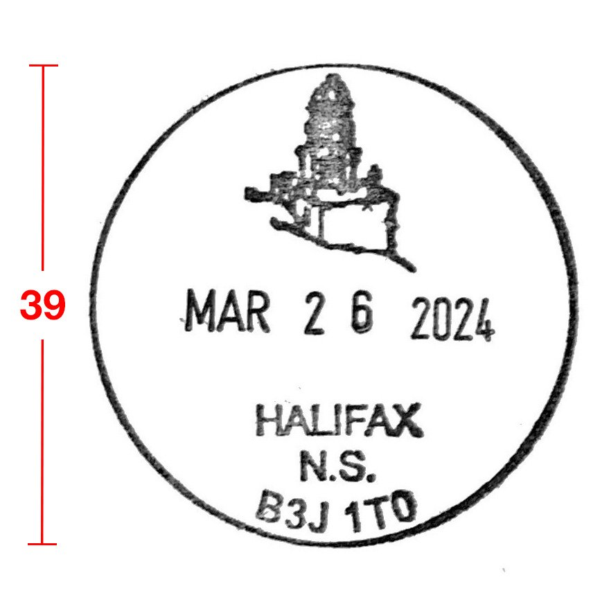

Halifax STN Central pictorial cancel
Halifax Town Clock
- Status
- Active
- Run dates
- ? to present
- Design
- Halifax Town Clock
- Ink colour
- Black
- Designer
- Unknown
- Post office
- Halifax STN Central
1680 Bedford Row
Halifax, NS
B3J 1T0 - Subjects
- architecture, citadel, clock, tower, NHS
- Notes
- May 2025: this cancel is currently broken.
Collect it by mail. Send your stamped covers, with a stamped return envelope, to the post office address above (check the notes first). How to collect pictorial cancels by mail · en français
 Halifax STN CentralExplosion 1917
Halifax STN CentralExplosion 1917 Halifax CSCCityscape
Halifax CSCCityscape Halifax CSCExplosion 1917
Halifax CSCExplosion 1917 Peggy's CoveBluenose 1921-2021
Peggy's CoveBluenose 1921-2021 Shubenacadie POThe Milk Can Capital of Canada / La capitale canadienne du bidon de lait
Shubenacadie POThe Milk Can Capital of Canada / La capitale canadienne du bidon de lait